Utilería, ronda 2: elige una por objeto
Elegidas (03:22): pantalla B y caja B. Lo que pediste en la ronda 1, de noche y con la G63. Responde con la letra de cada objeto (por ejemplo «pantalla A, placa B»). La ronda 1 sigue en su propia página.
Lo que no es final: la placa usa letras de Windows provisionales y sus colores no están comparados con una foto de la placa 2026, porque no encontramos ninguna publicada. Por eso es una versión estilizada, sin escudos y sin código QR. En la caja se ocultó a Alexandro y a Diego, porque en el plan van en el asiento de atrás. En la guantera se ocultó a Héctor.
1 · Pantalla del tablero (en lugar de la radio)
La pantalla muestra la portada y el título; ‹ › recorre los 9 lanzamientos y «Escuchar» es un botón en la pantalla. El casete ya no está. La tecla dorada solo quedaría si cabe sola junto a la pantalla, y en ninguna de las dos cabe bien, así que no aparece.
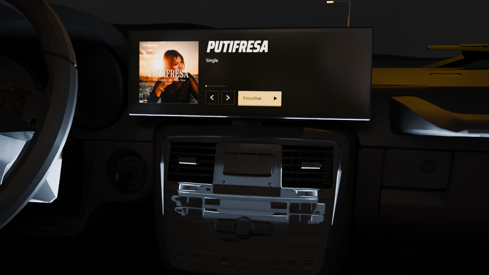
APantalla ancha flotando sobre el tablero, como las Mercedes nuevas. 
BPantalla empotrada en el tablero, donde la G63 trae su pantallita, como en las Ram nuevas. 
Así se ve la pantalla de cerca, la misma en las dos.

2 · Guantera C, con la puerta cortada del tablero
Ahora la puerta es la de la propia camioneta: se cortó del tablero, gira sobre su borde de abajo y queda abierta a 70°. Adentro hay una caja oscura que ahora cubre todo el hueco del tablero sin salirse hacia la cabina, y el forro de la puerta sigue su inclinación.

Los bordes del corte, de cerca y sin objetos. 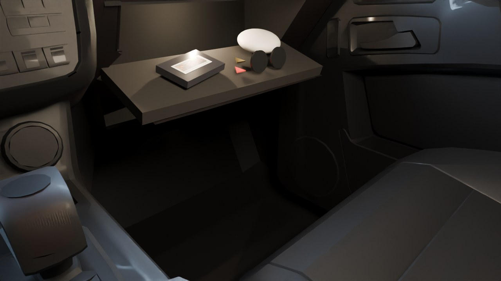
CCasete suelto, plumillas, la lista arrugada y lentes, sobre la puerta abierta.

3 · Placa, con el diseño actual de Veracruz
Sigue la placa de Veracruz que mandaste: el encabezado, la greca dorada en las esquinas, el lema y la línea de servicio. Lo que cambia: nuestras letras en lugar del número; el código QR abre el WhatsApp de la banda; el monograma MT va donde la placa real lleva el escudo nacional, porque la ley lo protege; el escudo del estado es un dibujo parecido, no el oficial.
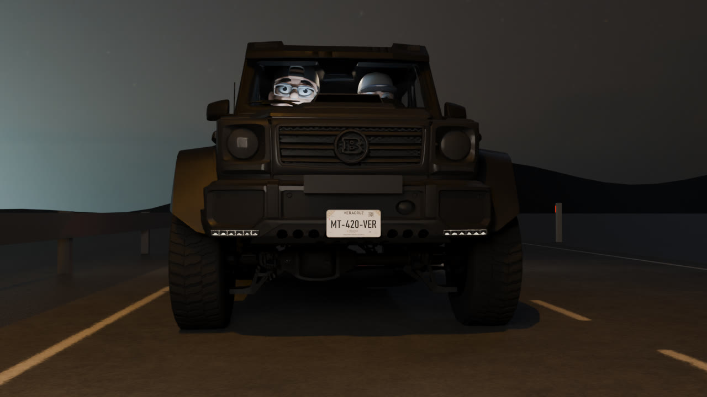
Desde la cámara de la escena 6. 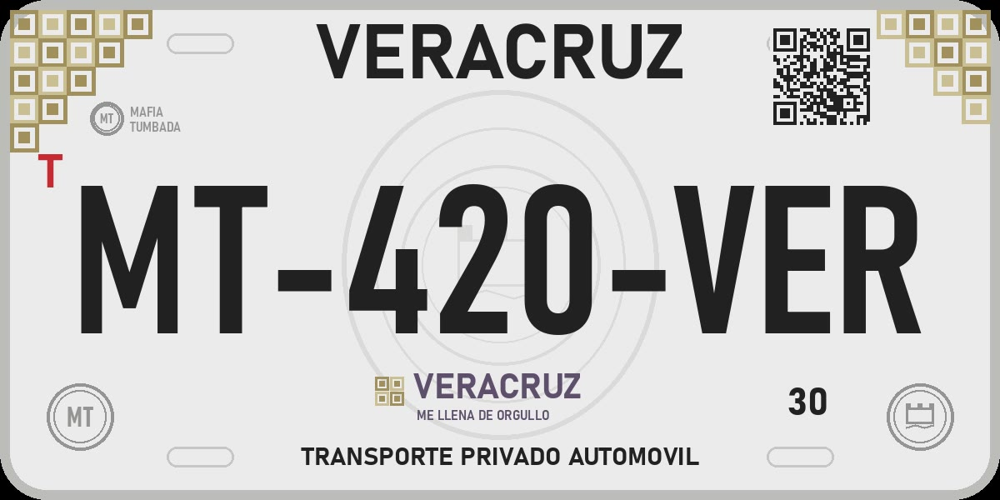
La placa de frente; el QR se puede escanear.


5 · Calcas: la mezcla que elegiste
Cada calca es su propia pieza, con su forma y su acabado: vinil brillante troquelado con borde blanco, papel mate, holográfica y cromo dorado. Van pegadas sobre la superficie real de la puerta, pasan por encima de las líneas de la lámina y casi todas tienen una esquina levantada que deja ver el reverso blanco (las de letra recortada van planas). A, «puesto de merch»: colores fuertes, piezas sueltas y nuevas. B, «troca»: negro y dorado, despintadas, amontonadas en la esquina de arriba a la izquierda, con letra de cromo dorado.
Elegiste (05:15) una mezcla de A y B. Así quedó: de A, la fresa (Instagram), la redonda holográfica (Spotify) y la estrella MT, que ahora dice «Míranos en YouTube» en lugar de «Tumbado»; de B, la fresa dorada (YouTube), la redonda negra (TikTok), la carta «El sombrero» y «PURA MT» en cromo, en lugar de «Puro Veracruz» (05:30). También se corrigió la T: el final de su barra salía cortado en todas las calcas. Si quieres cambiar alguna pieza por otra de las hojas de abajo, dime cuál.
Los cuadros grises son el lugar del ícono oficial de Instagram, YouTube y TikTok: quedan derechos, sin desgaste y sin nada encima, hasta que bajes los archivos oficiales. El de Spotify ya es su ícono oficial.
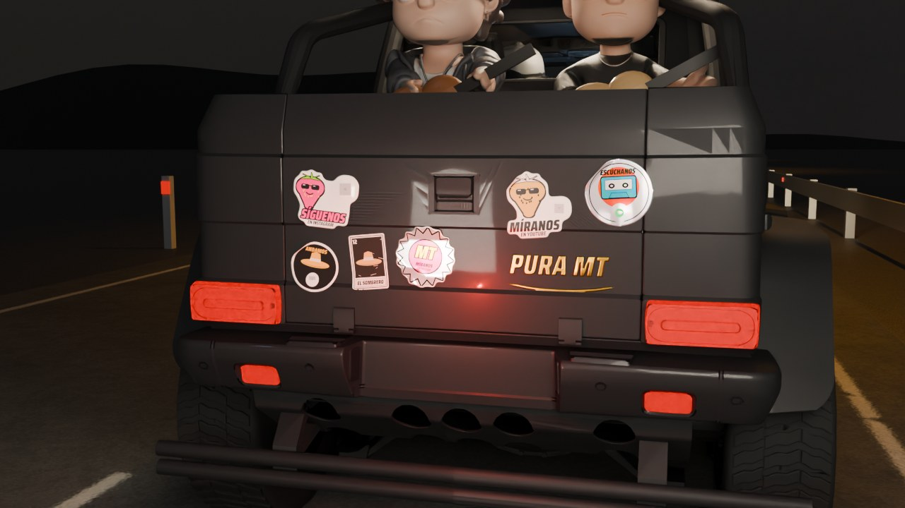
MezclaDe cerca. 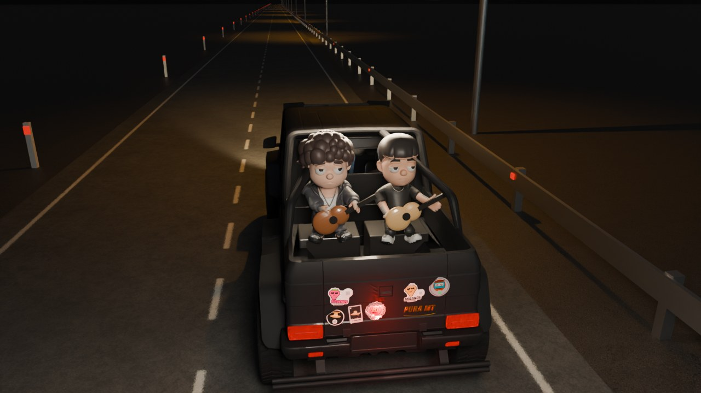
MezclaDesde la escena 2. 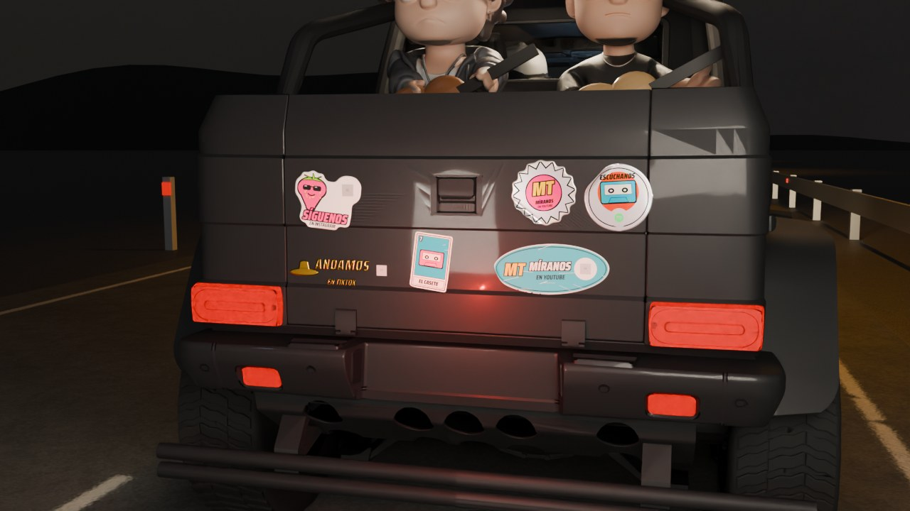
ALa opción A, puesto de merch, de cerca. 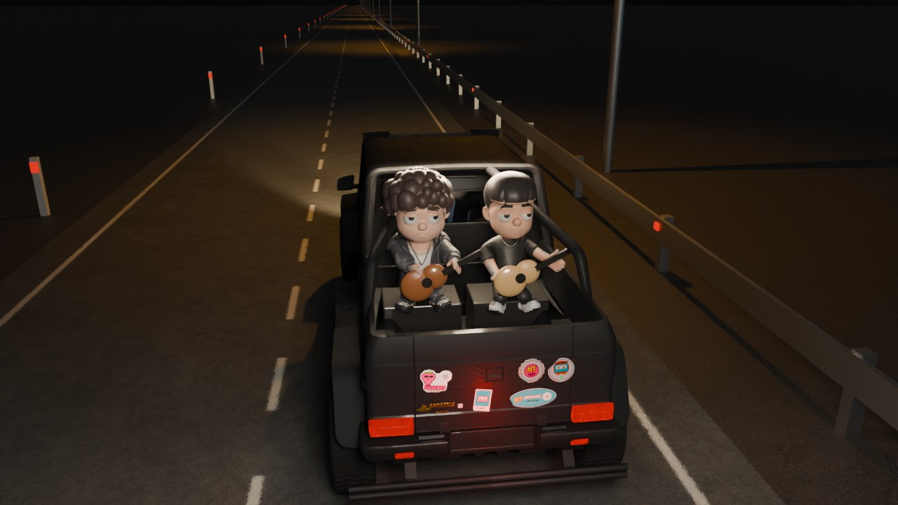
ALa misma, desde la escena 2. 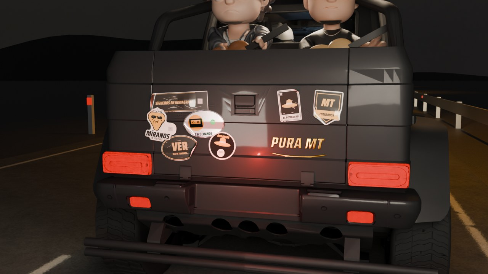
BLa opción B, troca, de cerca. 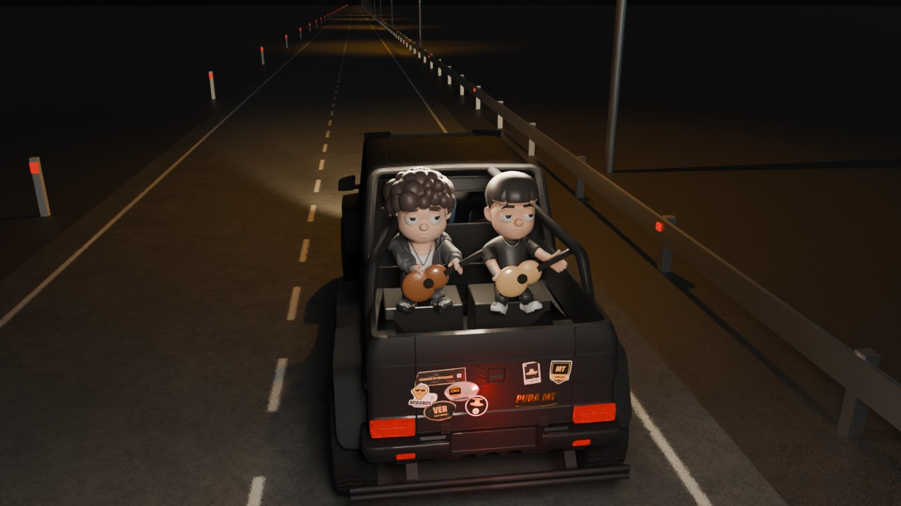
BLa misma, desde la escena 2. 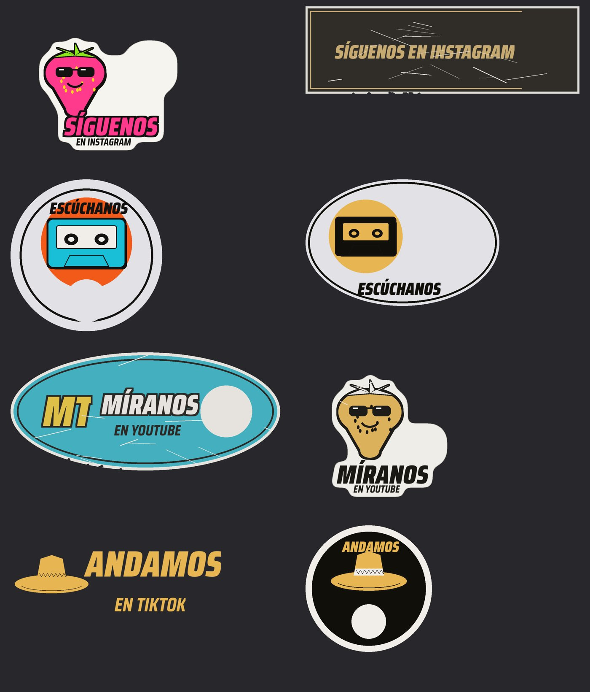
Las primeras ocho (A a la izquierda, B a la derecha). 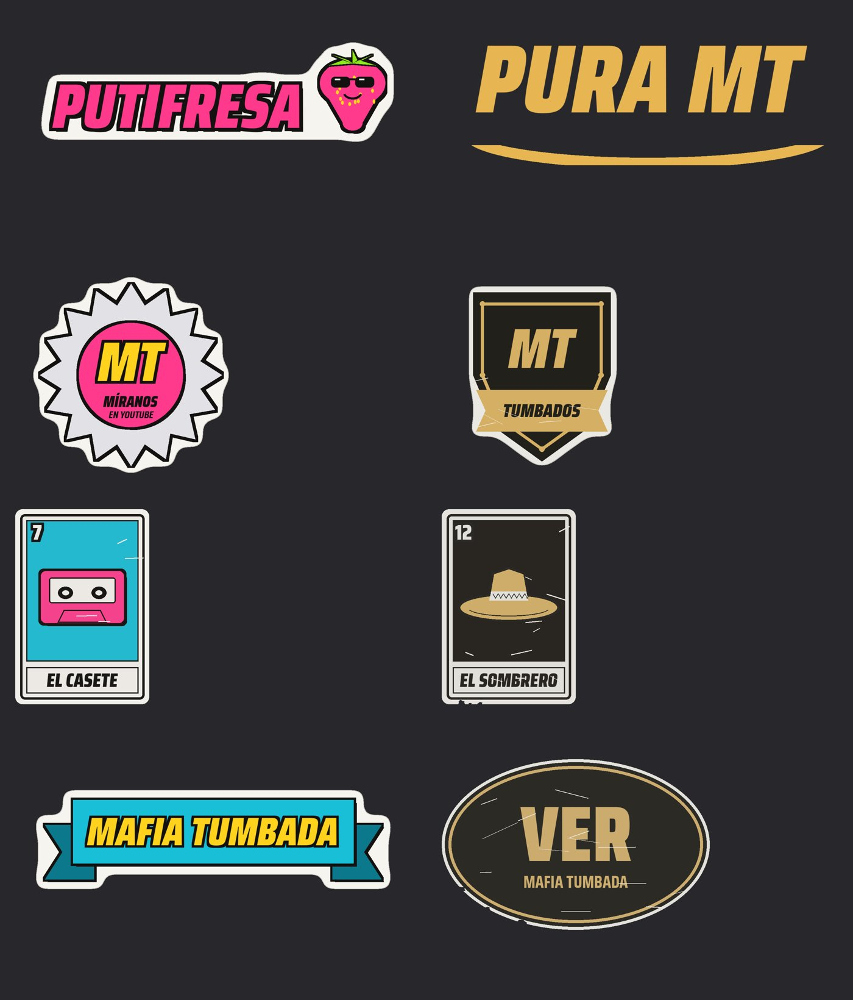
Ocho más en el mismo estilo, sin ícono de plataforma: PUTIFRESA, estrella MT («Míranos en YouTube»), carta «El casete» y listón en A; «Pura MT», escudo MT, carta «El sombrero» y óvalo VER en B.


Antes: calcas mezcladas
Cuatro estilos juntos, como si se hubieran ido juntando: Instagram troquelada y vieja (ya despintada), Spotify redonda, YouTube en tira y rayada, TikTok troquelada y nueva. El cuadro gris marca dónde va el ícono oficial, derecho y sin desgaste.
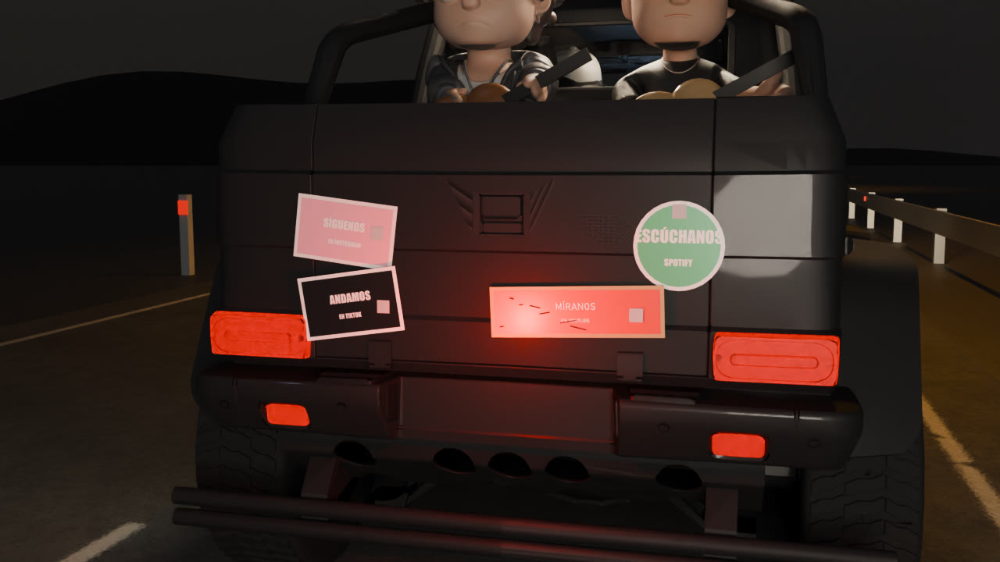
Las cuatro en la puerta trasera.

6 · Caja B: lo que carga la banda
Se queda la caja B que elegiste: la piñata colgada del arco, los globos y una pila baja. Ahora la pila es equipo de la banda, cada cosa a su tamaño real y con su material: el tololoche y el bajo sexto en fundas acolchadas, el estuche duro del requinto, un road case con MAFIA TUMBADA pintado y esquinas de metal, la hielera con la fresa, una bocina con luces, la sombrerera con PURA MT, una tejana, una caja de cervezas sin marca, la bandera MT, una maleta y un cable. Las calcas son las de la puerta, solo las de la banda, sin íconos de plataforma. La dona sigue.
A, ordenada: las fundas paradas contra la cabina con una correa negra, todo derecho, el papel picado tenso. B, vivida: las fundas recargadas y cruzadas, una correa naranja encima, la sombrerera rodada de lado, la tejana sobre la bocina, la dona apretada entre las cosas, faltan dos cervezas y el papel picado cuelga de un lado.
Desde la cámara de la escena 2 solo se distinguen las formas y los colores. Los materiales y las calcas se ven en la toma de cerca. Puedes mezclar, como con las calcas: por ejemplo «A, pero con la sombrerera de B», o quitar y cambiar cualquier objeto de la hoja.
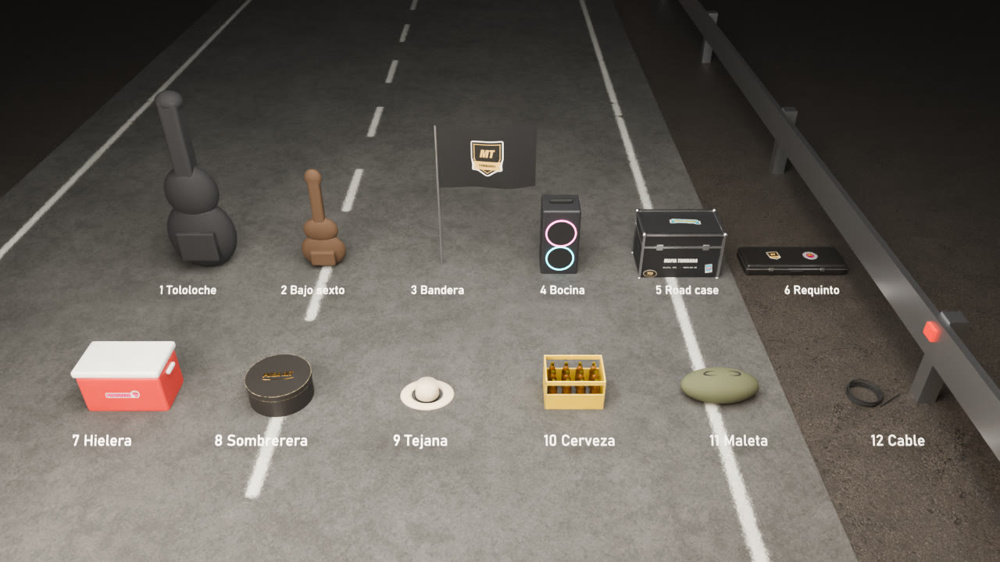
Los doce, numerados, para elegir o quitar. 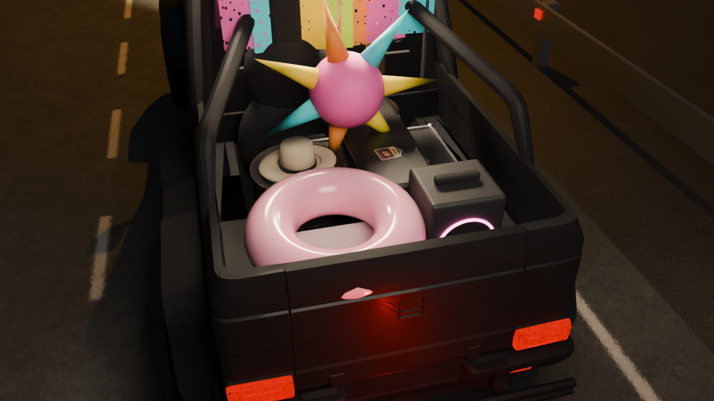
AOrdenada, de cerca. 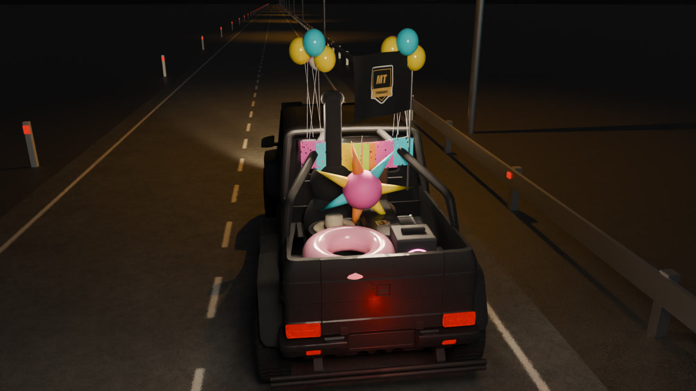
ALa misma, desde la escena 2. 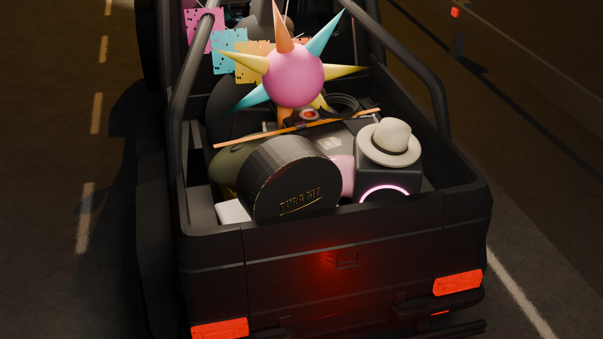
BVivida, de cerca. 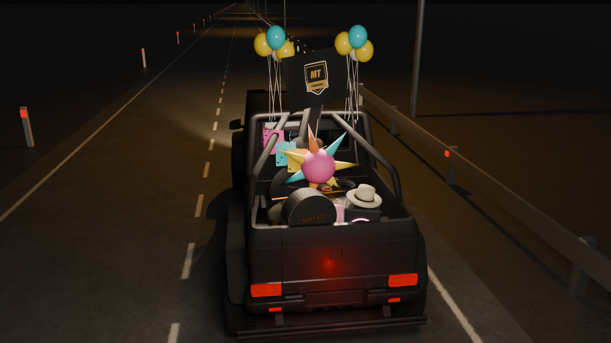
BLa misma, desde la escena 2.


4 · Caja A, más llena
Siguen la dona, la hielera y la piñata, y se suman una pelota de playa, globos amarrados al arco, otra dona inflable, maracas, una bocina y un sombrero. Todo va en pirámide, con la piñata hasta arriba. Cada opción se ve dos veces: de cerca y desde la cámara de la escena 2, que es la toma que cuenta.
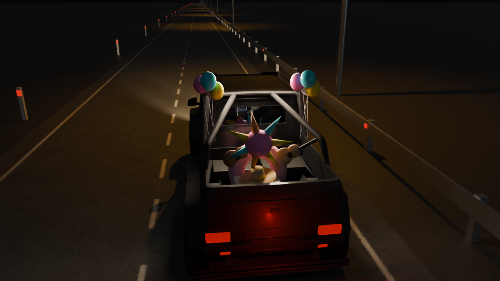
AApilada: la piñata va sentada sobre la hielera y la dona. Desde la escena 2. 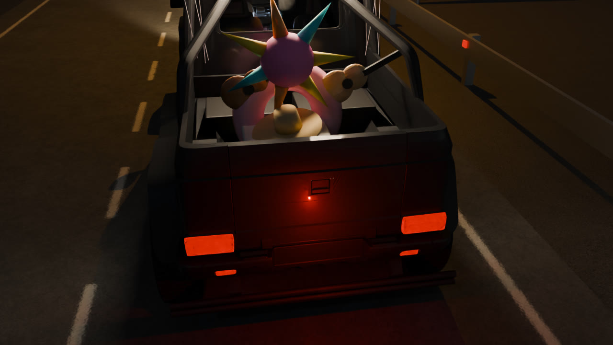
ALa misma, de cerca. 
BColgada: la piñata cuelga del arco y abajo queda una pila baja. Desde la escena 2. 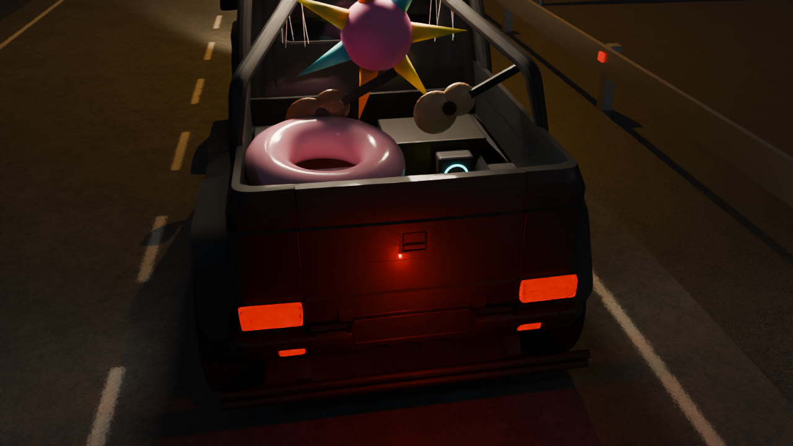
BLa misma, de cerca.


Ya elegidas, sin foto nueva
Pantalla móvil C (camión con marquesina de focos) y letreros verdes B (bandera desde el acotamiento) quedan anotados en el sistema de diseño.